Окончил технический факультет Высшей школы КГБ. В 1990 году возглавил группу разработчиков антивируса AntiViral Toolkit Pro в Научно-техническом центре КАМИ, а спустя семь лет основал "Лабораторию Касперского". Антивирусные продукты Kaspersky используются более чем в 200 странах мира.
Российские IT-ученые и предприниматели
Евгений Рошал (10 марта 1972 года, Челябинск)
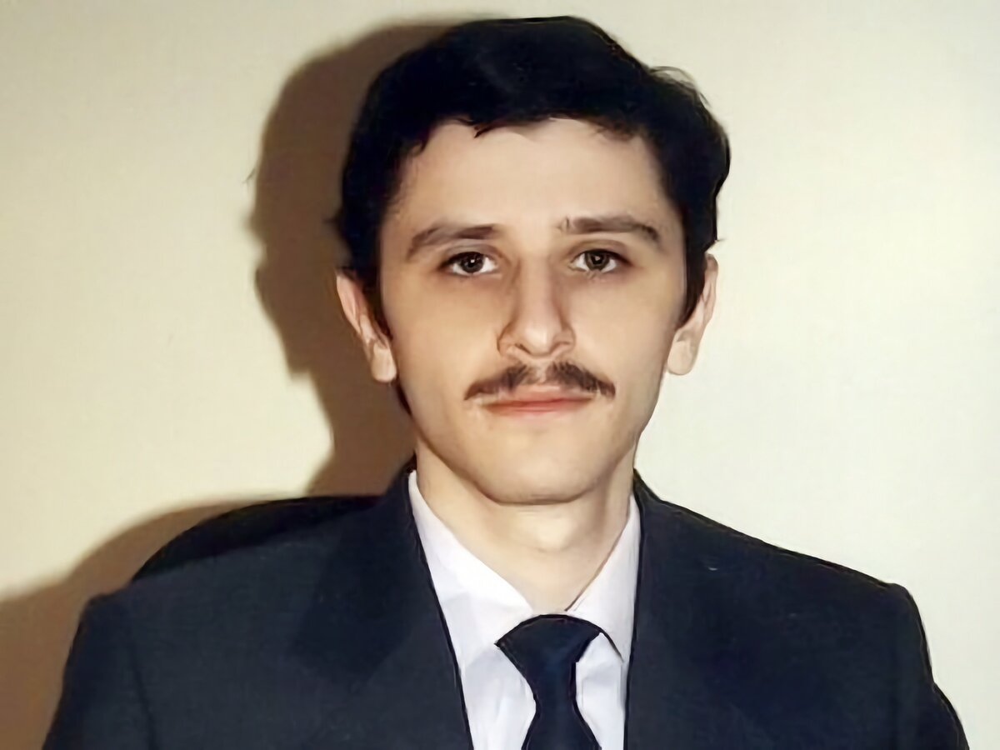
Возрастным пользователям персональных компьютеров он известен как создатель файлового менеджера FAR (некоторые до сих пор им пользуются, хотя ему уже 26 лет). В Челябинском политехе написал диплом по алгоритмам сжатия информации, а позже создал формат сжатия RAR, а также одноименный архиватор RAR (2015), позднее переименованный в WinRAR.
Источник: Ссылка на источник
Игорь Данилов (22 апреля 1964 года, Ленинград)

Создатель популярного российского антивируса Dr. Web, а также основатель компании "Доктор Веб". Начинал трудовую деятельность инженером по авиационным оборонным проектам. Первый вирусный анализатор написал в начале 90-х для защиты НИИ, в котором работал. В 2003 году основал "Доктор Веб", где работает техническим директором.
Источник: Ссылка на источник
Дмитрий Крюков (8 октября 1960 года, Ульяновск — 13 апреля 2009 года, Москва)
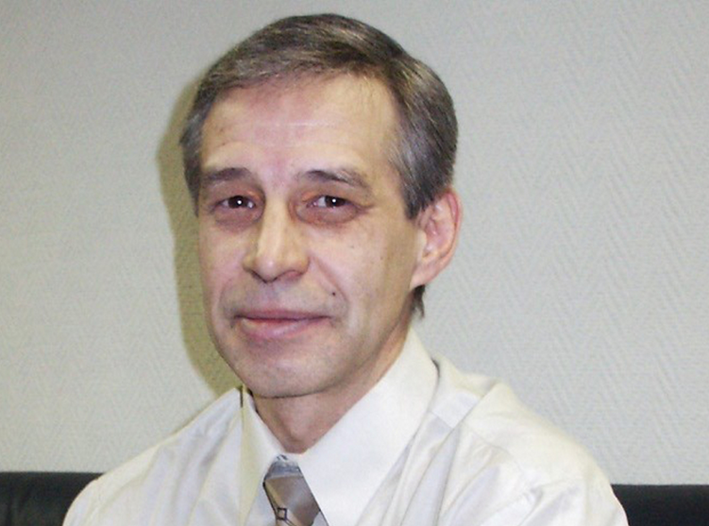
В 1994 году он устроился в пущинский Институт биохимии и физиологии микроорганизмов РАН ведущим программистом, а спустя два года разработал первую русскоязычную поисковую систему, назвав ее Rambler ("странник, бродяга"). Стал сооснователем компании "Рамблер". Умер в возрасте 48 лет на рабочем месте от кровоизлияния в мозг.
Источник: Ссылка на источник
Аркадий Волож (11 февраля 1964 года, Гурьев, Казахская ССР)
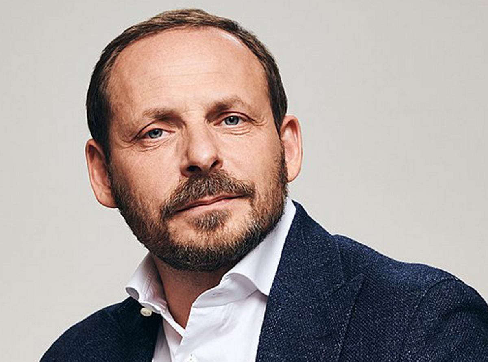
В конце 80-х годов занимался исследованиями в области обработки больших объемов данных в Институте проблем управления АН СССР. В 1989 году основал фирму по продаже компьютеров CompTek. В 1993 году была создана программа для поиска информации под названием Yandex (Yet ANother inDEXer — "еще один индексатор"). Спустя два года программу стали учить искать информацию в интернете. В 2000 году компания "Яндекс" стала независимой. Сегодня под этим брендом развиваются десятки разнообразных онлайн- и офлайн-сервисов.
Источник: Ссылка на источник
Илья Сегалович (13 сентября 1964 года, Горький — 27 июля 2013 года, Лондон)
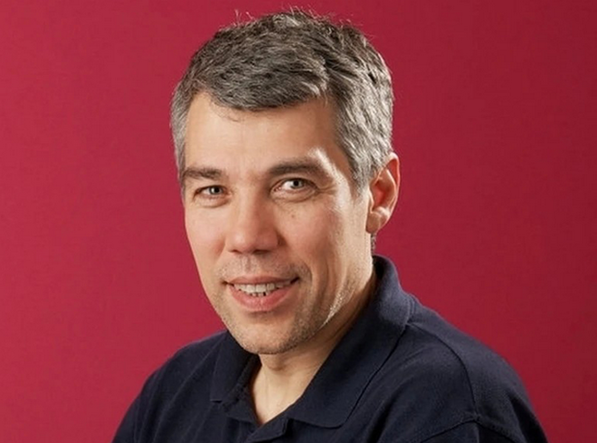
Сооснователь "Яндекса" и его бессменный директор по технологиям, непосредственно участвовал в разработке поисковой системы. Познакомился с Воложем в Республиканской физико-математической школе в Алма-Ате.
Источник: Ссылка на источник
Михаил Донской (8 августа 1948 года — 13 января 2009 года, Москва)
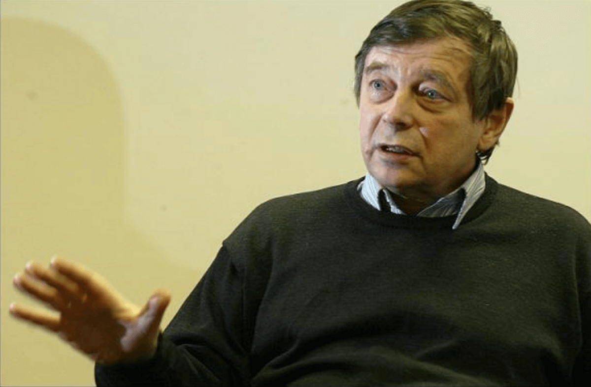
Один из авторов компьютерной программы "Каисса" (Kaissa), которая в 1974 году в Стокгольме стала первым чемпионом мира по шахматам среди компьютерных программ.
Источник: Ссылка на источник
Павел Дуров (10 октября 1984 года, Ленинград)
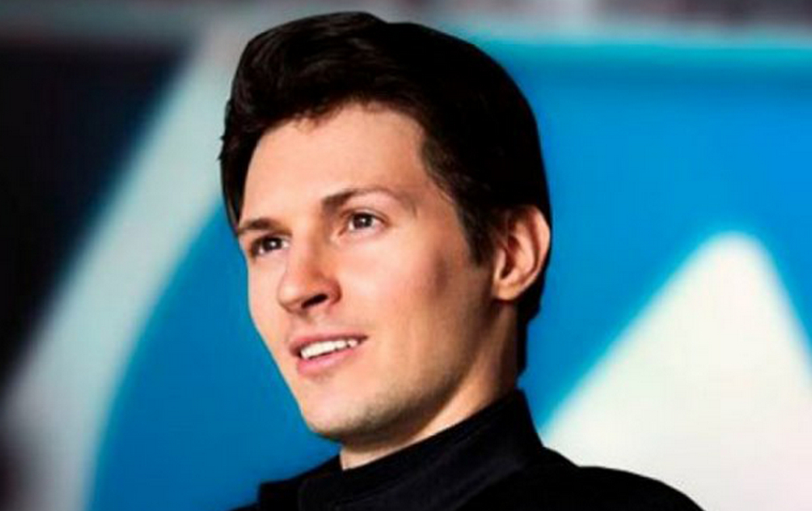
Дал миру социальную сеть "ВКонтакте" и мессенджер Telegram, хотя окончил филологический факультет СПбГУ. Оба интернет-сервиса для общения являются одними из самых популярных в России и мире. В 2014 году покинул Россию и ныне живет в Дубае.
Источник: Ссылка на источник
Альберт Попков (26 сентября 1972 года, Южно-Сахалинск)
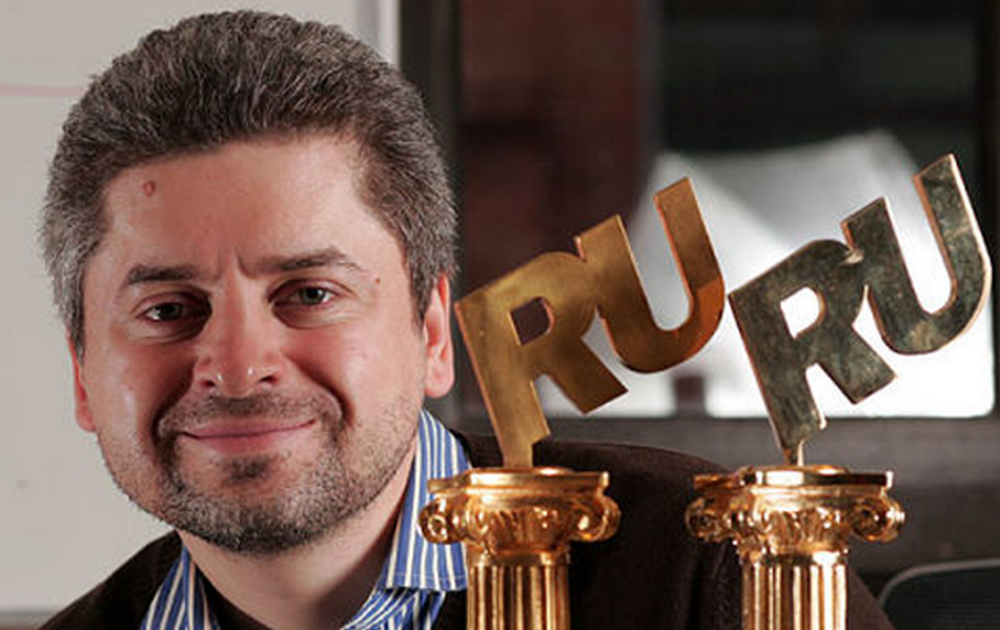
В три года его семья переехала в Москву. В марте 2006 года создал социальную сеть "Одноклассники". Поначалу проект дублировал англоязычный ресурс classmates.com, равно как "ВКонтакте" создавался в виде русскоязычного клона Facebook*. Первые месяцы сайт существовал как хобби и только на деньги самого создателя.
Источник: Ссылка на источник
Сергей Брин (21 августа 1973 года, Москва)
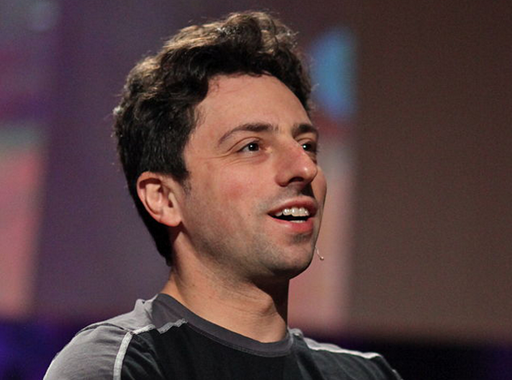
В возрасте шести лет вместе с родителями эмигрировал в США. В Стэнфордском университете познакомился с Ларри Пейджем. Вместе они создали поисковую систему, ныне известную во всем мире — Google. Домен google.com был зарегистрирован 15 сентября 1997 года. Позднее "Гугл" превратился в крупнейшую IT-компанию мира.
Источник: Ссылка на источник
Андрей Андреев (3 февраля 1974 года, Москва)
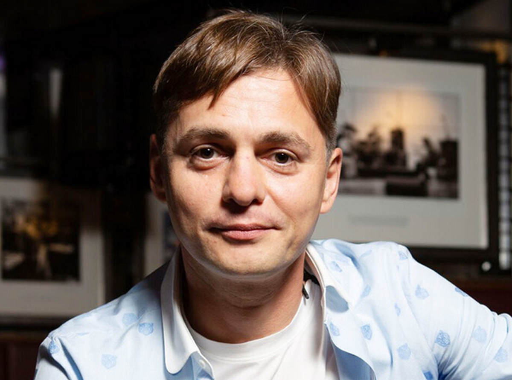
Основатель таких популярных сайтов знакомств, как Mamba и Badoo, а также малоизвестных ныне сервисов SpyLog и "Бегун". В 1995 году уехал в Испанию вслед за семьей, тогда же и начал заниматься бизнесом и созданием веб-проектов. Сегодня живет в Великобритании.
Источник: Ссылка на источник
Сергей Белоусов (2 августа 1971 года, Ленинград)
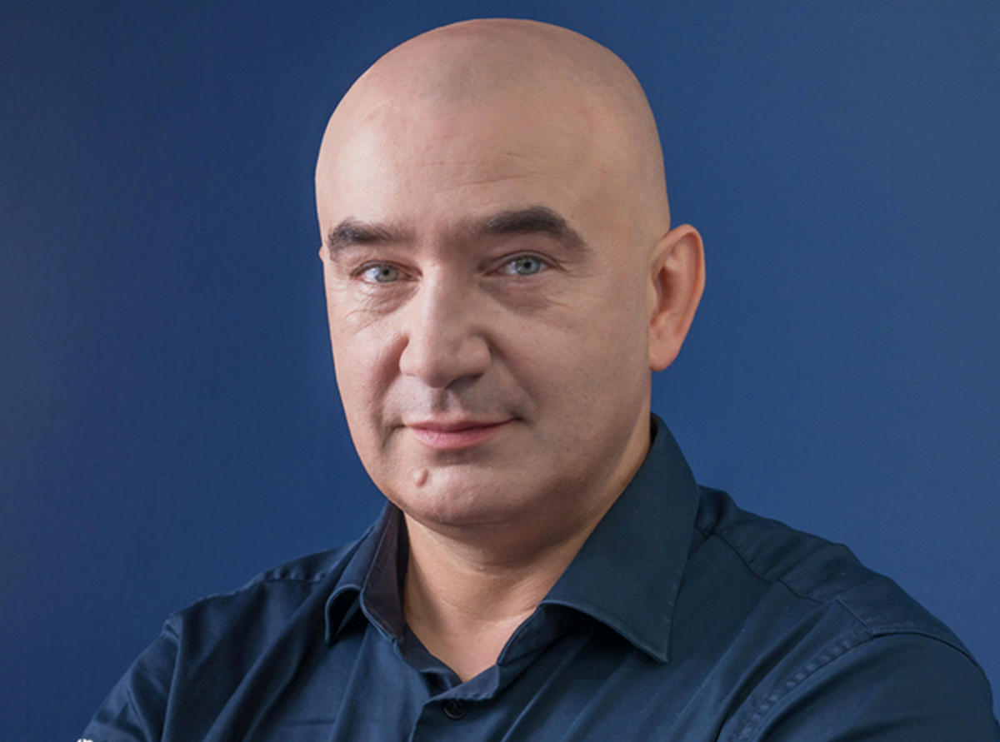
Родился в семье ученых-физиков. В 1994 году переехал в Сингапур, где и живет по сей день. Основал такие международные IT‑компании, как Acronis, Parallels и Acumatica. Начинал в компании по сборке и продаже ПК в начале 90-х годов. Также можно отметить его компаньонов Илью Зубарева и Дмитрия Чихачева.
Источник: Ссылка на источник
Макс Левчин (15 июля 1975 года, Киев)
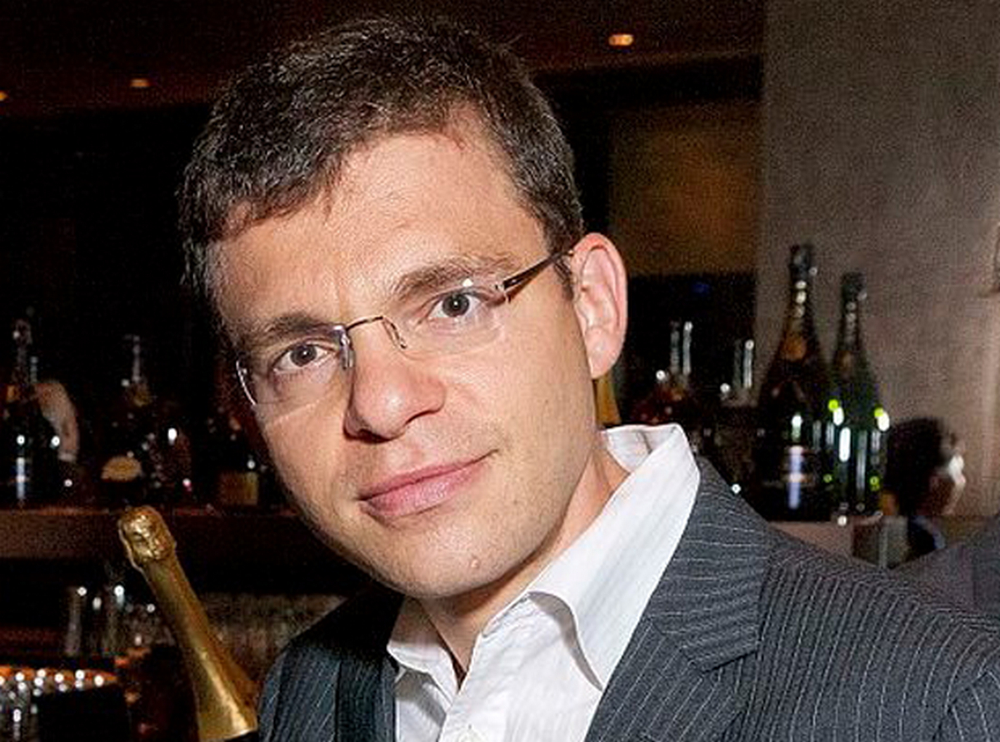
В 1991 году семья эмигрирует в США, а Макс после окончания Иллинойского университета переезжает в Кремниевую долину. Три первых стартапа окончились неудачей, однако после этого в 1998 году была создана PayPal (вместе с Питером Тилем). Ныне крупнейшая дебетовая электронная платежная система (с 2002 года принадлежит компании eBay).
Источник: Ссылка на источник
Давид Ян (3 июня 1968 года, Ереван)
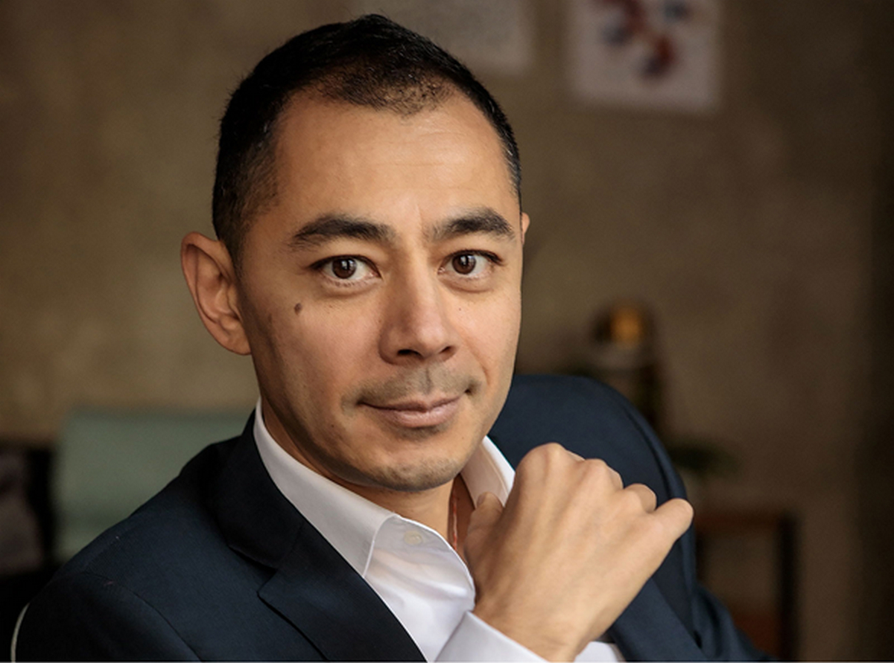
Отец — китаец, мать — армянка. Окончил в столице Армении физматшколу, затем поступил в МФТИ. Еще в вузе в 1989 году вместе с программистом Александром Москалевым основал Bit Software, которая с 1998 года называется ABBYY. Всему миру известны их FineReader (система распознавания текстов) и Lingvo (электронные словари).
Источник: Ссылка на источник